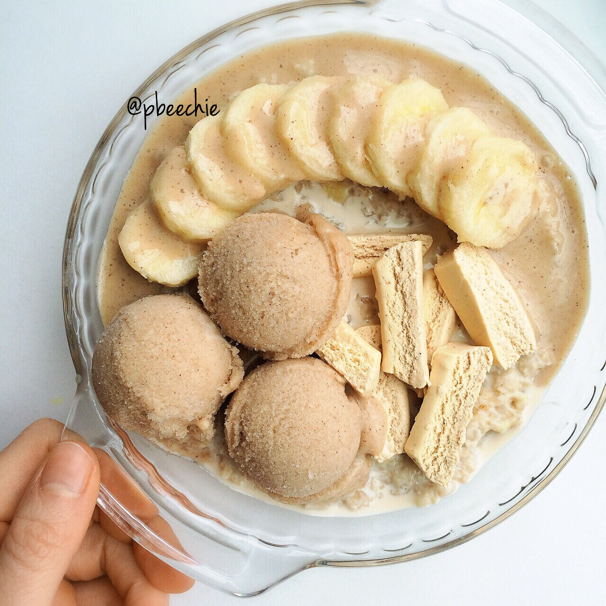

Banana Maple Oatmeal

As I walked through the radiant oatmeal meadow, I nibbled the ground a tad to discover a blooming banana maple pasture. I laid my eyes upon glistening banana coins, delicate strips of cinnamon roll B Up bar, a protein river of the cinnamon maple cream class, and a sizable cinnamon bun wink desserts ice cream mountain range. I continued my journey through the oatmeal meadow. Walking walking...and THEN. I broke my foot. True story. Minus the oatmeal meadow and all ya know.
Spent Thursday night in the ER from 11:30 pm until 7:30 am because it turns out I did fracture my foot when I twisted it Thursday. No gym for 4-6 weeks..... I'm kinda lost right now. Seriously kudos to anyone whose had crutches; this crap is hard. I can't accept needing help and just sitting around. Idk. Feels weird because I'm so used to running around doing a million things at once myself. Jesse has been helping me so much... I can't thank him enough. He spent the whole night with me in the ER, then got home at 7:30 am just in time to turn around and drive an hour to work. Friday night was also dreadful. I woke up screaming and in so much pain because the meds weren't strong enough. He took an emergency trip at 5 am to get me Vicodin and comfort me to sleep. I love him so much. Saturday was the worst. I was up for a total of about 3-4 hours... I couldn't manage to keep any food down except for 3 bananas all day. I would get so nauseous and just puke if I tried. It just perpetuated the weakness and I kept falling asleep. About 9 pm at night, I finally scarfed down as much as I possibly could. Including a pint of gelato out of desperation. Then my energy boosted so much, and Sunday was a bit better. No promises that my meals will be fancy or elaborate for a while bc hobbling around the kitchen sucks. Simple will be good for a while until I get better.
Banana Maple Oatmeal
Serves: 1
-
1/2 cup instant oats
-
1/2 mashed banana
-
1/2 cup water
-
2 TBSP sugar free maple syrup
-
1 stevia packet
Mix your ingredients. Microwave for 2 minutes!! Boom. Done. Told ya I'd be simple for a while. :p
To make the cinnamon maple cream, mix 1 TBSP vanilla protein powder, 1 TBSP sugar free syrup, cinnamon, stevia, and unsweetened almond milk to desired consistency.